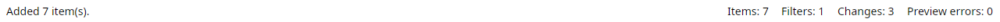

Magic File Renamer Help
Index
>
Operation
>
User Interface
>
Status Bar
Status Bar

Status bar.
The status bar sits at the bottom of the main window.
The left area shows a contextual hint (menu/toolbar tip, full Rename List cell text, or a recent status message from File List / Rename List / Filter Chain).
Items
— count of rows in the
Rename List
.
Filters
— count of steps in the
Filter Chain
.
Changes
— items with at least one field changed by the current preview.
Preview errors
— items whose preview failed; highlighted when the count is greater than zero. Those rows are skipped on
GO
unless you resolve them.